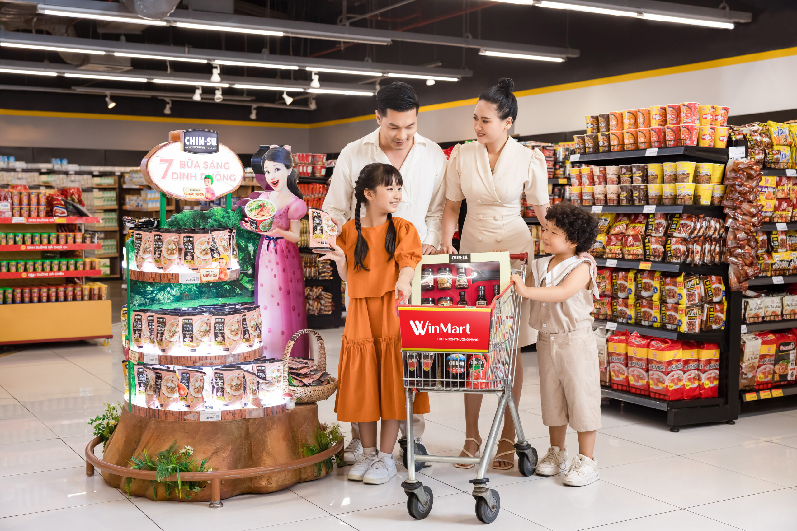
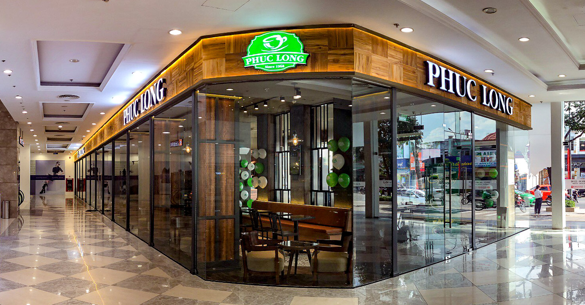
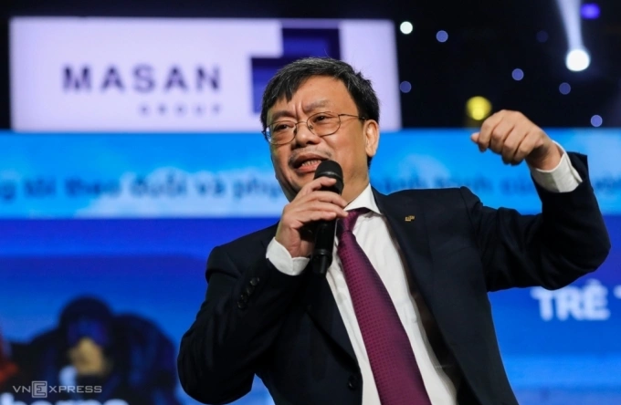

茶・コーヒーチェーン
売上 約120億円
通信（MVNO）
WinMart店舗で展開

マサンの創業者グエン・ダン・クアンは、1963年、中部クアンチ省に生まれた。モスクワのプレハーノフ経済大学でMBAを、ベラルーシの国立科学アカデミーで博士号を修めた——学究肌の理系人（報道では「核物理学の博士」とも紹介される）。ビングループのファム・ニャット・ヴオン（ウクライナ）、ソビコのグエン・ティ・フオン・タオ（モスクワ）と同じ、旧ソ連で最初の資本を築いた「東欧組」の一人だ。
1990年代、クアンはロシアで貿易会社Masan Rus Tradingを立ち上げる。当初は在ロシアのベトナム人向けに即席麺を売り、やがてロシア人の食卓へ。月産3,000万パックの工場を構え、大豆・魚醤・チリソースへと広げた。「ロシア人に即席麺の食べ方を教えた男」と呼ばれる。
2001年に軸足をベトナムへ戻し、翌2002年、醤油ブランドChin-suを投入。2004年、盟友ホ・フン・アイン（現Techcombank会長）とともにマサン・グループを創業した。消費財で得た安定収益を元手に、小売・精肉・鉱山、そして金融へと版図を広げていく。
Forbesの2026年リストで純資産は12億ドル。資産源は「消費財と銀行」——ヴオン、タオと並ぶ、旧ソ連発・自力の実業家である。
中国以外では最大級とされるヌイパオ鉱山を核に、採掘から加工まで手がけるMSR。景気に左右されにくい消費財に対し、こちらは世界市況に乗る"別の攻め"だ。
三菱マテリアルは2020年、約9,000万ドルを投じてMSRに10%出資。さらに2024年には、MSR傘下のタングステン加工会社H.C. Starck（独）を三菱マテリアルへ売却した。マサンは川下の加工を手放し、採掘という川上に集中——選択と集中の一手だ。
| 銘柄 | 事業 | 市場 | 時価総額（円換算） | PER | PBR |
|---|---|---|---|---|---|
| MSN／マサン・グループ | 持株会社（本体） | HOSE | 約5,900億円 | 19.1x | 2.59x |
| MCH／マサン・コンシューマー | 消費財（ブランド） | HOSE | 約1兆1,200億円 | 26.3x | 10.48x |
| MSR／マサン・ハイテク素材 | タングステン等 | UPCoM | 約2,350億円 | 49.1x | 2.97x |
| MML／マサン・ミートライフ | 精肉 | UPCoM | 約580億円 | 16.5x | 1.81x |
| TCB／Techcombank ※非連結・関連会社 | 民間銀行（持分法） | HOSE | 約1兆3,100億円（うちマサン持分相当 約1,970億円） | 8.1x | 1.18x |
| ▲ 底堅い上位5 | セクター | 週次騰落 | ▼ 下落 上位5 | セクター | 週次騰落 | |
|---|---|---|---|---|---|---|
| STB | 銀行 | ±0.00% | GAS | エネルギー | −11.81% | |
| VNM | 消費財 | −0.17% | GVR | 素材 | −11.78% | |
| SAB | 消費財 | −0.85% | MWG | 小売 | −11.34% | |
| LPB | 銀行 | −0.95% | VRE | 不動産 | −10.79% | |
| VJC | 運輸 | −2.97% | TCB | 銀行 | −9.06% |